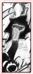

| » vs. Sasuke ;
In his eyes, Lee's first rival is Sasuke. Immediately after their first encounter at the fake entrance of the exam, both Lee and Neji noticed something that differed Sasuke from the rest of his group. While Neji and Tenten went on ahead, Lee sought out Sasuke and asked him to dual right then and there. For Lee, every fight is a test of how far his techniques will go and from there, he may learn from mistakes he makes, or more of how his opponent thinks and what his abilities are. He practically glowed at the idea that he gets to face the number one rookie before the exam preliminaries even start. Lee obviously has confidence in his abilities to challenge Sasuke without hesitation and even feels lucky when he accepts. We first see a glimpse of Lee's abilities when Naruto rushes into a minor battle with Lee. Sick and tired of seeing Sasuke always in the spotlight, he rushes head-on at Lee with a punch that can be seen from miles away, and Lee lightly taps it away before dodging a kick and sending out a small Konoha Reppuu attack that left Naruto spinning into a wall. He follows up with a claim that he is the strongest among the Leaf genin at the moment. His skills didn't disappoint viewers, as he sends Sasuke flying within the first few moments of their first dual. Even with Sasuke's sharingan, Sasuke lost the fight. Aside from fighting, Lee and Sasuke's opinions of each other are mutual. Both thinks of the other as a very powerful opponent, and both would be surprised if the other were beaten. The pair also learn from each other. Sasuke copied part of Lee's Konoha Reppuu during a later match, and he combined it with his own attacks to win victory over his preliminary matches. Without seeing Lee's move, he probably would have been in trouble. In theory, if Lee and Sasuke ever fought in a serious match, it's hard to say who would probably win.* One can speculate this as similar to a Gai vs. Kakashi match. Gai once said that Sasuke reminds him of a young Kakashi, and Lee is practically the mirror image of Gai. Gai also mentions that his record with Kakashi is 50 wins, 49 losses. But I'm sure Kakashi can hold his own. Gai's wins are pretty much 50%, indicating that he and Kakashi are equals. However, Lee has once mentioned that sharingan is possibly the worst match against taijutsu, because even if the eye can reveal an attack before it happens, the body doesn't react fast enough for the user to do anything. Lee might have the advantage in his incredible speed and high taijutsu skills. It should also be noted that although Sasuke can copy some of Lee's simpler moves, he cannot use them repeated due to lack of training. Several consecutive times of a taijutsu move can wear the user out, if he has not trained before. Sasuke experienced a minor case of this after defeating his opponent in the Chuunin prelims. There's quite a bit of evidence to argue either side, so it's most likely a draw. *Note: This theory is based on facts shown before Sasuke ran off to find Orochimaru for more power. « reverse |
PRELUDE GENERAL Naruto Terms Chakra LEE First Glance Personality Techniques Fighting Style Transition Weaknesses Analysis RIVALRY vs. Sasuke vs. Neji vs. Gaara vs. Sound vs. Kimimaro RELATIONS Maito Gai Teammates Sakura Naruto EXTRAS Symbolism Seiyuu Quotations References EDEN Reasons Images Wallpapers Fanworks Graphics EPILOGUE Updates Linkage Credits Joined Contact Guestbook |